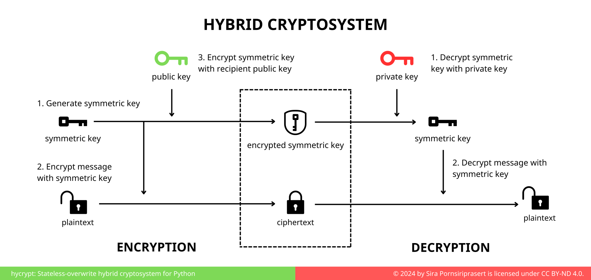
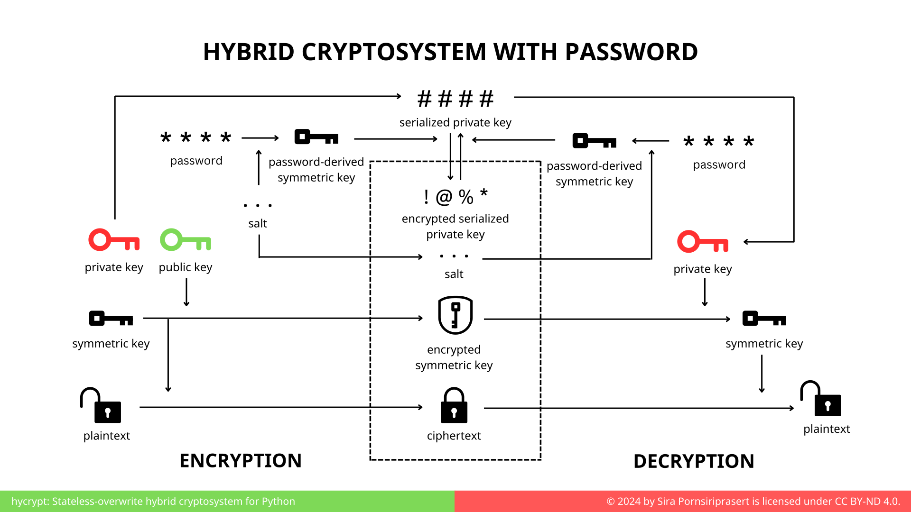

Hycrypt#
Stateless-overwrite hybrid cryptosystem for Python



Hycrypt is a stateless-overwrite hybrid cryptosystem designed for secure data encryption and password-free updates. This makes it ideal for secure communication and storage systems where only the recipient can decrypt the data — yet the data can be updated without the password.
The caveat is that this cryptosystem does not guarantee authenticity of the message. Anyone with the public key can overwrite the message. However, without the private key (or password), they cannot read the encrypted message.
Features#
🔒 Hybrid encryption using RSA + AES-CBC + HMAC
🔁 Stateless overwrite using only the public key, removing the need to retain user secrets
🔑 Password-based protection using PBKDF2
📦 Simple, yet flexible API for file-based and in-memory encryption
Quick Start#
Using FileCipher to manage file encryption:
from hycrypt.file_cryptosystem import FileCipher
file = "home/data.txt"
plaintext = b"secret"
password = b"correcthorsebatterystaple"
cipher = FileCipher(file)
cipher.create(password)
cipher.write(plaintext)
decrypted_text = cipher.read(password)
For more flexible use:
import hycrypt
plaintext = b"secret"
ciphertext, public_key = hycrypt.encrypt_with_password(plaintext, password=b"password1")
decrypted_message = hycrypt.decrypt_with_password(ciphertext, password=b"password1")
assert decrypted_message == plaintext
new_plaintext = b"my new secret"
new_ciphertext = hycrypt.encrypt_with_public_key(previous_data=ciphertext, plaintext=new_plaintext, public_key=public_key)
new_decrypted_message = hycrypt.decrypt_with_password(new_ciphertext, password=b"password1")
assert new_decrypted_message == new_plaintext
To install hycrypt using pip:
pip install hycrypt
How It Works#
Encryption#
A symmetric key is randomly generated to encrypt the plaintext into ciphertext. The encryption uses Fernet implementation by cryptography.
An RSA key pair (private and public key) is generated.
The public key is used to encrypt the symmetric key. The public key can be shared safely.
The user selects a password.
The password is combined with a random salt to produce a password-derived symmetric key using PBKDF2.
The password-derived key is used to encrypt the private key.
The ciphertext is stored along with the encrypted symmetric key, the salt, and the encrypted private key.
Decryption#
The user inputs the password.
The password is combined with the stored salt using PBKDF2 to recreate the same password-derived symmetric key.
The password-derived key decrypts the private key in the file.
The recovered private key decrypts the symmetric key that was used to encrypt the file data.
The symmetric key decrypts the ciphertext into plaintext.
Overwriting Data Without Password#
A new symmetric key is generated randomly.
The symmetric key encrypts the new plaintext into ciphertext.
The original public key is used to encrypt the new symmetric key.
The file is updated with the new encrypted symmetric key and the new ciphertext.
Despite the writer not knowing the password, the data can be overwritten using the public key. The encrypted private key remains a secret. Because the encrypted private key corresponds to the public key, the recipient who knows the password can still decrypt the data.
Disclaimer#
Hycrypt is intended for educational and experimental uses. While it employs reasonably secure cryptographic practices, it has not undergone formal security audits. Hence, it is not recommended for production environment without thorough review and modification. Consider opening an issue or submitting a pull request for potential issues and improvement.